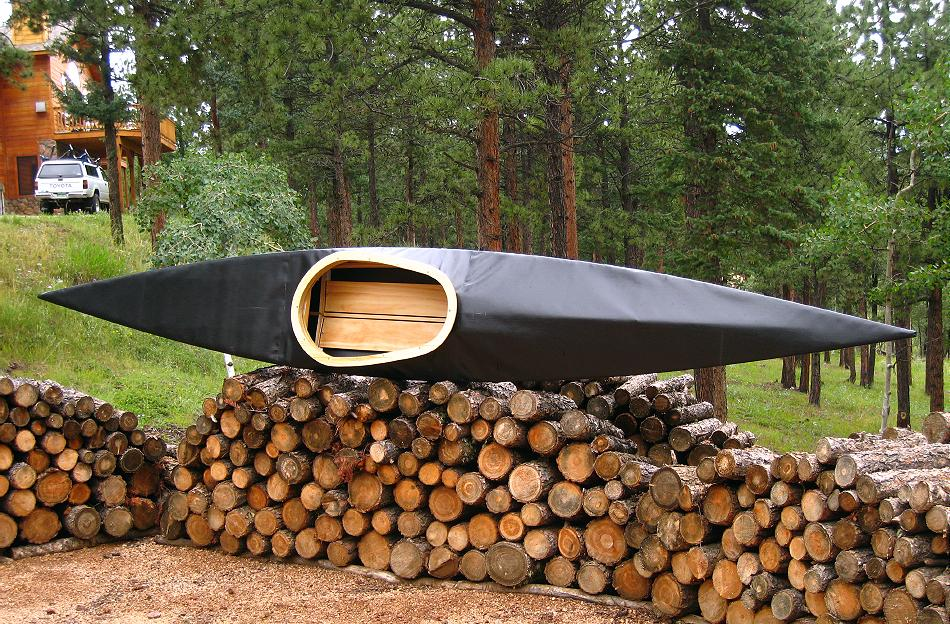

| Sea Bee by Tom Yost (US) | Menu Previous Page Next Page |
|

The Sea Bee ( 13' 6" X 22" X 23lbs) is made from redwood stringers, plywood cross sections, and a PVC skin. It's designed for paddlers up to 225lbs. Sea Bee construction is featured in the "Wood Frame Kayak Builders Manual".
|
|